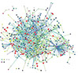
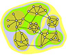

COURSES

CPSC 569 / ANSC 542
APPLIED BIOINFORMATICS
Bioinformatics is a new discipline that addresses the need to manage and interpret the data that was massively generated by genomic research. This discipline represents the convergence of biotechnology and information technology, and encompasses analysis and interpretation of data, modeling of biological phenomena, and development of algorithms and statistics. However, bioinformatics becomes only a science when fueled by hypothesis-driven research (Allen J, BioEssays 23:104-107, 2001) and within the context of the complex and ever-changing living world. Devoid of inductive attributes, bioinformatics can offer powerful ways to understand life's complex behavior.
APPLIED BIOINFORMATICS is intended for students interested in biology, computer science, and information technology. It will cover aspects as varied as bioinformatics in comparative and functional genomics, molecular evolution and phylogenetic reconstruction, cladistic and phenetic analysis, alignment theory, biomolecular structure and its prediction, RNA modeling and thermodynamics, structural genomics and the protein universe, networks and complex behavior.
[pdf] Download flyer
[pdf] Download white paper, "Teaching Bioinformatics: Needs and Challenges"

CPSC 567 / IB 505
BIOINFORMATICS AND SYSTEMS BIOLOGY
Systems biology represents a new view of the biological sciences, in which the emergent properties of a biological system are explained by its components and their interrelationship. This new view is possible thanks to advances in genomics, bioinformatics, and structural biology, and the generation of large amounts of complex data linked to genotype and biological function. BIOINFORMATICS AND SYSTEMS BIOLOGY introduces students to the crossroads of bioinformatics and systems approaches. The course combines lectures and hands-on experiences.
[pdf] Download flyer
Gustavo Caetano-Anollés Lab - Evolutionary Bioinformatics at UIUC
Home / Research / Resources / Publications / Courses / Lab Members / Links